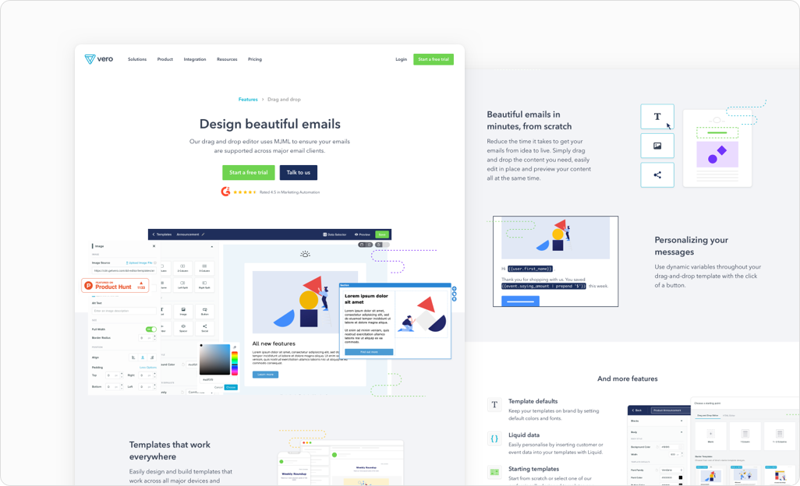
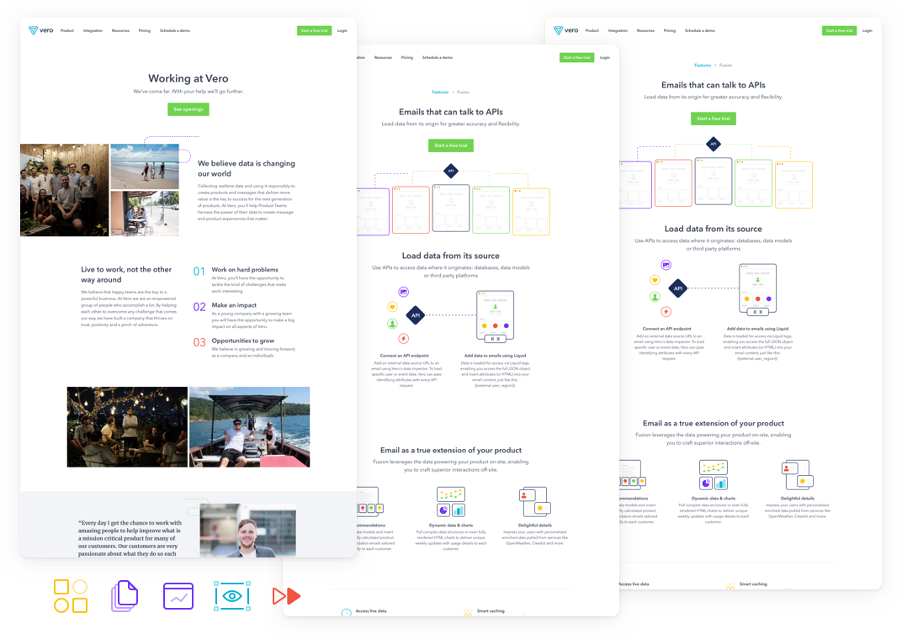

<div class="md:mt-48">
  <h1 class="font-headline font-semibold leading-tight mb-6 text-5xl">I’m a digital designer based in Hong Kong working remotely for <a class="underline" href="">Vero</a> on web and marketing things.</h1>

  <ul class="flex gap-3">
    <li>
      <a class="bg-yellow-100 block font-medium leading-none px-4 py-2 rounded-full text-xl" href="">Email</a>
    </li>
    <li>
      <a class="bg-yellow-100 block font-medium leading-none px-4 py-2 rounded-full text-xl" href="">Twitter</a>
    </li>
  </ul>
</div>

<section class="space-y-20">
  <div>
    <span class="inline-block font-headline font-medium mb-1 text-gray-400 tracking-widest uppercase">2018&ndash;present</span>
    <h2 class="font-headline font-semibold leading-tight mb-6 text-4xl">Vero</h2>
    <p class="max-w-prose text-xl text-gray-500">From marketing pages to incremental UX/UI improvements to the marketing site and help docs.</p>
  </div>

  <div class="space-y-10 text-gray-500">
    
  </div>

  <div class="gap-6 grid grid-cols-2">
    <div class="bg-gray-50 bg-opacity-30 border col-span-2 flex items-center justify-center p-10 rounded-2xl">
      
    </div>
    <div class="bg-gray-50 bg-opacity-30 border flex items-center justify-center p-10 rounded-2xl">
      
    </div>
    <div class="bg-gray-50 bg-opacity-30 border flex items-center justify-center p-10 rounded-2xl">
      
    </div>
  </div>

  <div class="bg-gray-50 bg-opacity-30 border p-10 rounded-2xl">
    
  </div>

  
</section>

<section>
  <div>
    <span class="font-headline font-medium text-sm text-gray-400 tracking-widest uppercase">2014&ndash;2017</span>
    <h2 class="font-headline font-semibold leading-tight text-4xl">blubolt</h2>
  </div>
</section>
